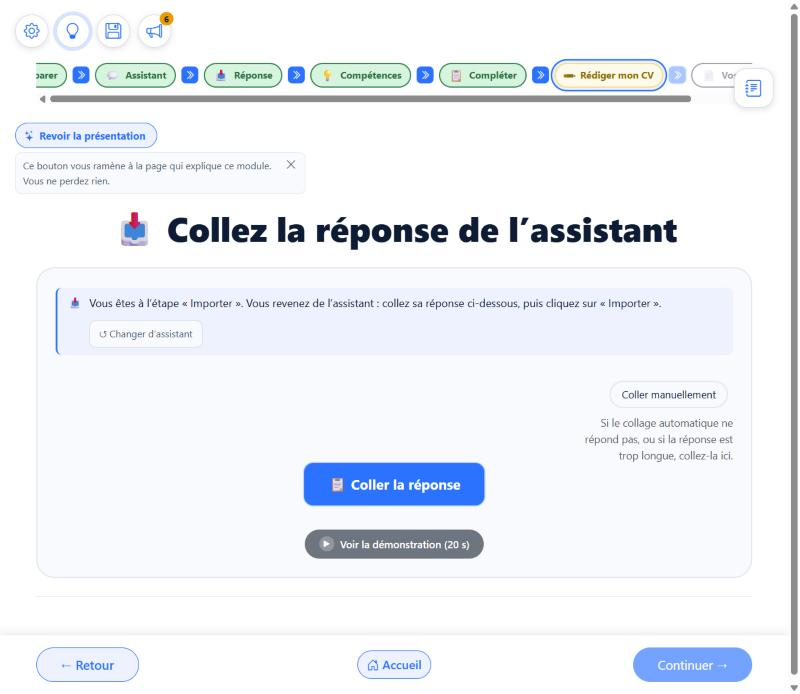
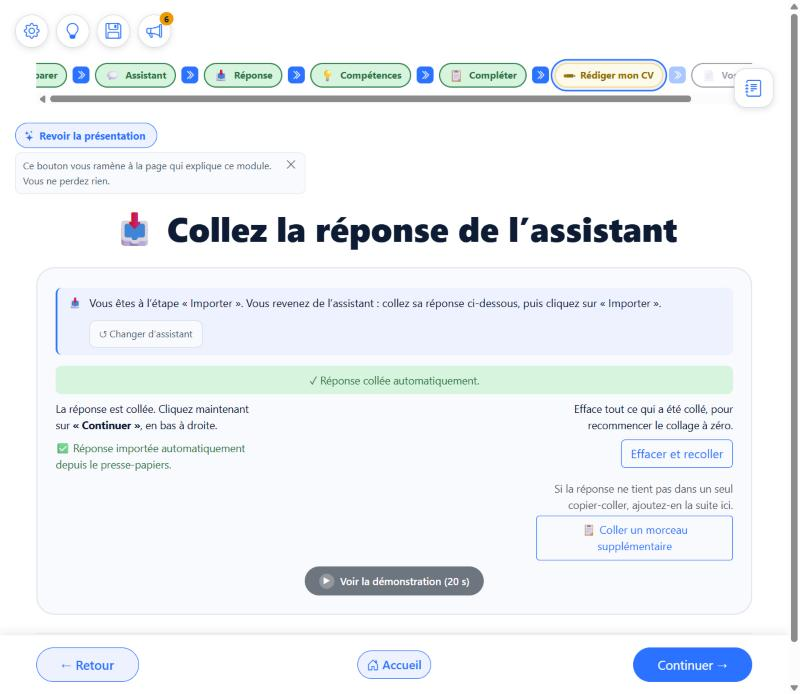
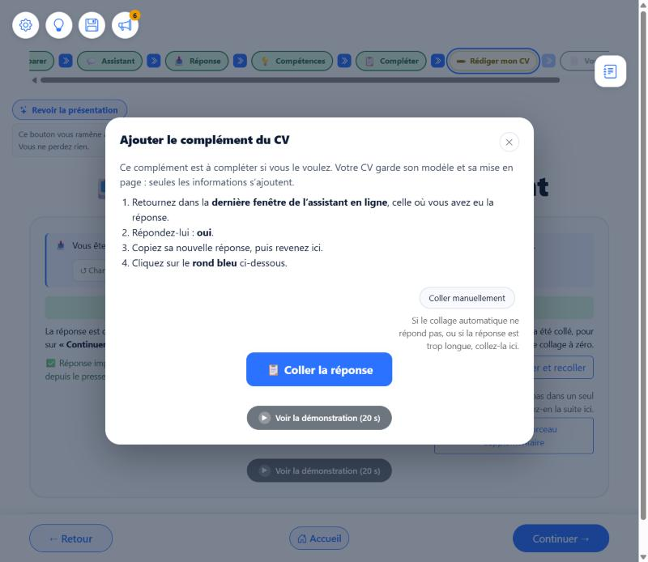

Écrans « Collez la réponse de l'assistant » : trop de boutons pour une seule action
Rien n'est codé. Les captures ci-dessous sont les vrais écrans de l'application, relevés ce jour. Au milieu de la page, l'écran proposé est cliquable : « Coller la réponse » et « Continuer » y fonctionnent pour de faux, pour que vous jugiez le geste.
1. Ce que j'ai trouvé dans le code cause du cafouillage
- Un seul composant, une trentaine d'écrans : Bilan (cinq écrans), Reformuler, Préparer lettre ou entretien, lettre, entretien, Cohérence (deux), Découvrir mes compétences, Regard (deux), Comparer, ATS, Un CV plusieurs métiers, le complément (quatre endroits : bandeau, écran « Étape 2 sur 2 », rubrique, fenêtre) et la fenêtre « Amélioration » (deux).
- La règle du 25/10 : sur ces écrans, le bouton de la barre du bas (« Continuer ») est le bouton d'import. Il reste gris tant que rien n'est collé. Il n'y a donc plus de bouton « Importer » dans la page. C'est le bon fonctionnement, vous le voyez sur la capture 1.
- Le défaut : quand une réponse est déjà importée (on revient sur l'écran avec « Retour », ou on ajoute un complément), la barre rend son « Continuer » au module, pour que la personne puisse avancer. Du coup la page remet le bouton « Importer » (inutile, grisé), à côté de « Coller la réponse » et de « Continuer ». C'est votre capture (capture 3).
- Deux phrases fausses sur l'écran normal : l'en-tête dit « puis cliquez sur « Importer » » (ce bouton n'existe plus) et le message vert dit « Réponse importée automatiquement » alors que la réponse est seulement collée (capture 2). C'est pour cela que vous ne voyez jamais « bien importé dans le CV ».
- Dans la fenêtre du complément, il n'y a pas de barre du bas : le bouton « Importer le complément » reste dans la fenêtre (capture 5). Et la phrase parle encore du « rond bleu », alors que le bouton est rectangulaire depuis le 30/08.
- Le complément a deux chemins pour la même chose, sur le même écran : le petit bouton « Importer le complément de CV » (qui ouvre une fenêtre) et la rubrique « Compléter mon CV » (qui s'ouvre dans la page).
2. Les écrans réels, tels qu'ils sont aujourd'hui
Écran « Collez la réponse de l'assistant », étape 12 de « Découvrir mes compétences » (le même composant sert à « Vos documents » et à « Créer mon CV »).

1. Rien d'importé correct
« Coller la réponse » et « Continuer » grisé.

2. Juste après le collage phrases fausses
« Importer » dans l'en-tête et « importée » dans le message vert : ni l'un ni l'autre n'est vrai.

3. Réponse déjà importée : votre capture défaut
Trois boutons, plus le complément en double.

4. Fenêtre « Ajouter le complément du CV »
« rond bleu » : le mot est faux.

5. La même, après le collage
« Coller » puis « Importer le complément » : deux gestes dans une fenêtre.
3. L'écran proposé (cliquez pour essayer) options B et C ci-dessous
Un seul bouton pour la réponse, un seul pour avancer. Aucun bouton « Importer ». Choisissez l'état à voir, puis cliquez dans l'écran.
📥 Collez la réponse de l'assistant
Ça ne se colle pas tout seul ?
Rien n'est importé : « Continuer » est grisé, comme aujourd'hui.
4. Les options votre choix
Vos deux messages disent deux choses différentes : « c'est Continuer qui doit faire importer » (option A) et « Coller colle et emporte, avec un grand message » (options B et C). Je vous les présente donc toutes, avec leurs bénéfices et leurs risques.
- Ce qui change : on ne remet plus jamais le bouton « Importer » dans la page. Si rien de nouveau n'est collé, « Continuer » avance. Si on colle du nouveau, « Continuer » importe. Les deux phrases fausses sont corrigées (« collée », plus « Importer »). Le grand message dit : « Réponse collée : cliquez sur Continuer pour l'ajouter à votre CV ».
- Bénéfice : faible risque, un seul endroit à modifier (la barre du bas et le composant), les ~25 écrans déjà au bon fonctionnement ne bougent pas.
- Risque : la confirmation « bien ajouté à votre CV » n'arrive qu'après « Continuer », sur l'écran suivant : ce n'est pas le grand message que vous voulez voir tout de suite.
- Ce qui change : un clic sur « Coller la réponse » lit le presse-papiers et lance l'import dans la foulée ; le grand message s'affiche ; « Continuer » ne fait plus qu'avancer. Aucun bouton « Importer », aucune écriture dans les ~30 modules (le composant lancerait lui-même l'import du module).
- Bénéfice : c'est exactement votre gros message « bien importé » ; un geste, un résultat visible.
- Risques : (1) sur beaucoup d'écrans, l'import change d'écran ou ouvre une relecture : le grand message ne serait pas vu ; (2) une réponse en plusieurs morceaux (longue) serait importée trop tôt et provoquerait une erreur au premier morceau ; (3) si le presse-papiers contient autre chose que la réponse, l'import part quand même (message d'erreur, mais plus d'étape de contrôle) ; (4) les 30 écrans sont à retester un par un.
- Ce qui change : sur les écrans où l'import reste sur la page (Vos documents, Créer mon CV, Découvrir mes compétences, Un CV plusieurs métiers, et les deux fenêtres du complément), « Coller la réponse » colle ET importe, avec le grand message (écran proposé ci-dessus). Sur tous les autres (Bilan, ATS, Regard, Cohérence, Comparer, Reformuler, lettre, entretien), on applique l'option A : « Continuer » importe, les défauts sont corrigés. Ensuite, on étend écran par écran à votre rythme, comme pour les autres dettes de composants (chantier par chantier).
- Bénéfices : vous avez tout de suite le comportement voulu là où il est sûr (le cas de votre capture et du complément) ; aucun écran n'est cassé ; le geste visible est le même partout (coller, puis continuer), seul le texte du message diffère un temps.
- Risques : pendant la transition, deux familles d'écrans se comportent un peu différemment (le message dit « ajoutée » ici, « collée » là) ; il faut l'écrire clairement dans les briques communes pour ne pas l'oublier.
5. Trois questions à trancher pour B et C
| Question | Ma recommandation | Autres choix |
|---|---|---|
| Q1. Réponse longue, en plusieurs morceaux. Aujourd'hui la personne peut coller un premier morceau, puis « Coller un morceau supplémentaire ». | (Recommandé) On tente l'import au premier collage. Si la réponse est coupée, un message simple dit : « Il manque la fin de la réponse : copiez la suite chez l'assistant, puis cliquez sur « Coller la suite » » ; l'import est retenté à chaque morceau. + reste très simple ; − un message d'erreur doux apparaît au premier morceau. |
Garder le mode actuel (coller tous les morceaux, puis « Continuer » importe) pour les seuls cas longs : + aucun message d'erreur ; − deux comportements à expliquer. |
| Q2. « Coller à la main » (quand le presse-papiers ne répond pas). | (Recommandé) La zone de texte s'affiche, avec un seul bouton « Ajouter à mon CV » (c'est le seul cas où un bouton d'import reste, car rien ne peut le déclencher tout seul). + la personne contrôle ce qu'elle colle ; − un bouton de plus dans ce cas précis. |
Importer dès que le texte est tapé ou collé : + aucun bouton ; − l'import peut partir sur un texte à moitié collé. |
| Q3. Le complément de CV (deux chemins aujourd'hui). | (Recommandé) Un seul chemin : la rubrique « Compléter mon CV » dans la page (pas de fenêtre, comme vous le demandez). On retire le petit bouton « Importer le complément de CV » qui ouvre une fenêtre. La fenêtre n'est ouverte que de deux endroits (ce petit bouton, et le bouton « Ajouter le complément du CV » de « Vos documents ») : le premier disparaît, le second est à examiner avec vous (le garder tel quel, ou ouvrir la rubrique dans la page). + un seul geste, moins d'écrans ; − le bouton de « Vos documents » demande un petit choix de plus. |
Garder la fenêtre et retirer la rubrique : + moins de texte dans la page ; − une fenêtre de plus, contraire à votre règle. |
6. Ce que je corrige quelle que soit votre option sans choix à faire
- L'en-tête de l'écran ne dit plus « cliquez sur Importer » ; la phrase est adaptée à l'option choisie.
- Le message vert ne dit plus « importée » quand la réponse est seulement collée.
- « Cliquez sur le rond bleu » devient « Cliquez sur « Coller la réponse » » dans les quatre endroits du complément.
- Un test automatique est ajouté pour le cas « réponse déjà importée » : jamais plus de bouton « Importer » grisé dans la page. Les cas des écrans de collage du parcours automatique sont mis à jour.